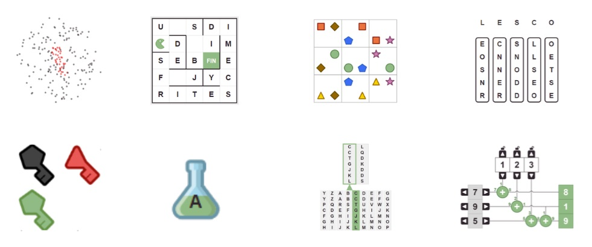

<div id="pageDiscover" class="pageContent">
  <div class="defaultText">
    <h1>Les épreuves précédentes</h1>
    <div class="section">
      <h2>Accès aux épreuves précédentes</h2>
      <p>Les épreuves du premier tour sont <a href="http://epreuve.concours-alkindi.fr" target="_blank">accessibles ici</a>.
      </p>
      <p class="txtcenter mtl"><a href="http://epreuve.concours-alkindi.fr" target="_blank"></a><br/>Sujets du premier tour d'années précédentes.
    </div>
    <div class="section">
      <p>Les coordinateurs/coordinatrices ont accès à l'ensemble des résultats de leurs équipes pour l'édition en cours sur leur <a href="http://coordinateur.concours-alkindi.fr" target="_blank" >interface</a>.</p>
      <p>Sujets de finale d'éditions précédentes :
      <a target="new" href="sujets_finale/finale2024.pdf">2024</a>,
      <a target="new" href="sujets_finale/finale2023.pdf">2023</a>,
      <a target="new" href="sujets_finale/finale2022.pdf">2022</a>,
      <a target="new" href="sujets_finale/finale2020.pdf">2020</a>,
      <a target="new" href="sujets_finale/finale2019.pdf">2019</a>,
      <a target="new" href="sujets_finale/finale2018.pdf">2018</a>,
      <a target="new" href="sujets_finale/finale2017.pdf">2017</a>
      <a target="new" href="sujets_finale/finale2016.pdf">2016</a>.
      </p>
      <p>La correction et le guide de résolution de l'énigme proposée par la DGSE lors de la finale 2020 est téléchargeable <a target="new" href="sujets_finale/resolution_enigme_dgse_2020.pdf">ici</a>.</p>
	<p>Retrouvez ici les affiches des éditions précédentes :
        <a target="new" href="affiches/affiche-alkindi-2024-A4.pdf">2024</a>,
        <a target="new" href="affiches/affiche-alkindi-2023-A4.pdf">2023</a>,
        <a target="new" href="affiches/affiche-alkindi-2022-A4.pdf">2022</a>,
        <a target="new" href="affiches/affiche-alkindi-2021-A4.pdf">2021</a>,
        <a target="new" href="affiches/affiche-alkindi-2020-A4.pdf">2020</a>,
        <a target="new" href="affiches/affiche-alkindi-2019-A4.pdf">2019</a>,
        <a target="new" href="affiches/affiche-alkindi-2018-A4.pdf">2018</a>,
        <a target="new" href="affiches/affiche-alkindi-2017-A4.pdf">2017</a>,
        <a target="new" href="affiches/affiche-alkindi-2016-A4.pdf">2016</a>,
        <a target="new" href="affiches/affiche-alkindi-2015-A4.pdf">2015</a>.
        </p>
    </div>
    <div class="section">
      <h2>Corrections vidéos</h2>
      <p>Regardez les vidéos de corrections des exercices du premier tour 2017-2018 sur la chaîne Youtube d'Inria !</p>
      <div ng-controller="VideosLists" class="videos">
        <ul class="videosList">
          <li ng-repeat="video in videosPreviousContests" ng-click='setActiveItem(video)' ng-class='activeItem==video ? "active" : ""'>
            <div ng-if='activeItem==video'><iframe width="800" height="450" ng-src="{{video.source | trustAsResourceUrl}}" frameborder="0" allowfullscreen></iframe></div>
            
            <div>{{video.title}}</div>
          </li>
        </ul>
      </div>
    </div>
      <div class="section">
      <h2>Les lauréat·e·s de l'édition 2024-2025</h2>
      <p>Près de 50 000 élèves ont participé au premier tour dans les 30 académies françaises et dans les établissements français à l'étranger. Merci à tou·te·s !</p>
      <p>Félicitations aux trois équipes gagnantes :</p>
      <ul>
        <li>Premier prix : Côme P.-B., Matthieu O., Louis L. et Nicolas Tâm R. du Collège Ermitage, Maison-Laffitte.</li>
        <li>Deuxième prix : Daniil J., Raphaël D., Youssef E. et Marie V. du Collège et Lycée Jean Baptiste de la Salle à Rouen. </li>
        <li>Troisième prix : Alexia C., et Theodor B. du Collège Notre Dame de Jamhour à Baabda (Liban).
      <p>Nous offrons des lots à toutes les équipes finalistes.</p>
    </div>
      <div class="section">
      <h2>Les lauréat·e·s de l'édition 2023-2024</h2>
      <p>Près de 53 000 élèves ont participé au premier tour dans les 30 académies françaises et dans les établissements français à l'étranger. Merci à tou·te·s !</p>
      <p>Félicitations aux trois équipes gagnantes :</p>
      <ul>
        <li>Premier prix : Matan I., Enguerrand B., Pierre M. et Nils D. du Collège-Lycée Franco-Allemand à Versailles.</li>
        <li>Deuxième prix : Mateja F., Celestine L., Mary C. et Fouad C. du L'Institution François d'Assise–Nicolas Barré, Monaco. </li>
        <li>Troisième prix : Daniil J., Raphaël D., Youssef E. et Paul Y.  du Collège et Lycée Jean Baptiste de la Salle, Rouen.
      <p>Nous offrons des lots à toutes les équipes finalistes.</p>
    </div>
      <div class="section">
      <h2>Les lauréat·e·s de l'édition 2022-2023</h2>
      <p>Près de 70 000 élèves ont participé au premier tour dans les 30 académies françaises et dans les établissements français à l'étranger. Merci à tou·te·s !</p>
      <p>Félicitations aux trois équipes gagnantes :</p>
      <ul>
        <li>Premier prix : Hélian H. et Lucas S. du Lycée de la Plaine de l'Ain.</li>
        <li>Deuxième prix : Ilian B., Kenzo M., Romain B. et Timothé V. du Lycéee Marie Reynoard. </li>
        <li>Troisième prix : Elias K., Quentin C., Nathan P. et Théo P. du lycée Ledoux.
      <p>Nous offrons des lots à toutes les équipes finalistes ainsi qu'à la meilleure équipe de chaque académie.</p>
    </div>
    <div class="section">
      <h2>Les lauréat·e·s de l'édition 2021-2022</h2>
      <p>Près de 53 000 élèves ont participé au premier tour dans les 30 académies françaises et dans les établissements français à l'étranger. Merci à tou·te·s !</p>
      <p>Félicitations aux trois équipes gagnantes :</p>
      <ul>
        <li>Premier prix : Daniel P., Nicolas C. et Samantha P. du Lycée Rochambeau de Bethesda (USA).</li>
        <li>Deuxième prix : Clémentine P. du lycée International de Ferney-Voltaire. </li>
        <li>Troisième prix : Enguerrand B., Matan I., Nils D. et Pierre M. du lycée franco-allemand de Buc.</li>
      </ul>
      <p>Nous offrons des lots à toutes les équipes finalistes ainsi qu'à la meilleure équipe de chaque académie.</p>
    </div>
    <div class="section">
      <h2>Les lauréat·e·s de l'édition 2020-2021</h2>
      <p>Plus de 47 000 élèves ont participé au premier tour dans les 30 académies françaises. Merci à tou·te·s !</p>
      <p>Félicitations aux trois équipes gagnantes :</p>
      <ul>
        <li>Premier prix : Itaï I., Maïten J., Théo H. et Luc E. du Lycée franco-allemand de Buc.</li>
        <li>Deuxième prix : Erik D., Nathan F., Antoine B. et Paolo R. du Collège Hoche de Versailles.</li>
        <li>Troisième prix : Sarah C., Tiphaine G. et Oscar V. de l'Ecole Alsacienne de Paris.</li>
      </ul>
      <p>Nous offrons des lots à toutes les équipes finalistes.</p>
    </div>
    <div class="section">
      <h2>Les lauréat·e·s de l'édition 2019-2020</h2>
      <p>Plus de 65 000 élèves ont participé au premier tour dans les 30 académies françaises. Merci à tou·te·s !</p>
      <p>Félicitations aux trois équipes gagnantes :</p>
      <ul>
        <li>Les trois premiers prix ont été remportés par trois équipes du lycée franco-allemand de Buc, félicitations aux élèves :</li>
	<li>Aurore G., Alain T., Théo C., Romain C., Noelie R., Matthieu C., Anatole C., Aimeric D., Maïten J., Théo H., Itaï I. et Luc E.</li>
      </ul>
      <p>Nous offrons des lots à toutes les équipes finalistes ainsi que la meilleure équipe de chaque académie.</p>
    </div>
	       <div class="section">
      <h2>Les lauréat·e·s de l'édition 2018-2019</h2>
      <p>Plus de 60 000 élèves ont participé au premier tour dans les 30 académies françaises. Merci à tou·te·s !</p>
      <p>Félicitations aux trois équipes gagnantes :</p>
      <ul>
        <li>Les trois premiers prix ont été remportés par trois équipes du lycée franco-allemand de Buc, félicitations aux élèves :</li>
	<li>Ulysse B, Victor J., Léa V., Samy M., Louis F., Grégoire C., Maher B., Virgile T., Jeanne M., Yassir B., Aurélien F. et Irene M.</li>
      </ul>
      <p>Les meilleures équipes de chaque académie ont été invitées à visiter un centre de recherche universitaire ou industriel, pour un total de <a href="#/pageVisits">18 laboratoires</a>.</p>
    </div>
    
     <div class="section">
      <h2>Les lauréat·e·s de l'édition 2017-2018</h2>
      <p>Plus de 52 000 élèves ont participé au premier tour, inscrit·e·s par 1062 enseignant·e·s. Merci à tou·te·s !</p>
      <p>Félicitations aux trois équipes gagnantes :</p>
      <ul>
        <li>Premier prix : William B., Cédric S., Thomas H. et Thien-An T. du Lycée International de l'Est Parisien à Noisy-le-Grand (académie de Créteil).</li>
        <li>Deuxième prix : Robin M. et Nathan H. de l'Institut Notre Dame de Saint-Germain-en-Laye (académie de Versailles).</li>
        <li>Troisième prix : Baptiste V., Léo C., Claire V. et Solal M. du Lycée Claude Monet	de Paris (académie de Paris).</li>
      </ul>
      <p>Les 10 meilleur·e·s élèves de chaque académie ont été invité·e·s à visiter un centre de recherche universitaire ou industriel, pour un total de 24 laboratoires.</p>
    </div>

    <div class="section">
      <h2>Les lauréat·e·s de l'édition 2016-2017</h2>
      <p>Le nombre de participant·e·s a dépassé 47 000 élèves et le nombre d'enseignant·e·s 1500. Merci à tou·te·s !</p>
      <p>Félicitations aux trois équipes gagnantes :</p>
      <ul>
        <li>Premier prix : Maëna Q., Cyprien D., Pierre A. et Vianney L. du Collègue-lycée Franco-Allemand, Buc, académie de Versailles.</li>
        <li>Deuxième prix : Clara W., Centre de formation des apprentis Heinrich Nessel, Haguenau, académie de Strasbourg.</li>
        <li>Troisième prix : Jean Z., Yanis J., Giani N. et Hugo G. Lycée Algoud-Laffemas, Valence, académie de Grenoble.</li>
      </ul>
      <p>Les 10 meilleur·e·s élèves de chaque académie ont été invité·e·s à visiter un centre de recherche universitaire ou industriel, pour un total de 22 laboratoires.</p>
    </div>

    <div class="section">
      <h2>Les lauréat·e·s de l'édition 2015-2016</h2>
      <p>Plus de 17 000 élèves ont participé à la première édition du concours, coordonné·e·s par plus de 500 enseignant·e·s. Merci à tou·te·s les élèves et enseignant·e·s pour leur participation.</p>
      <p>Félicitations aux trois équipes gagnantes :</p>
      <ul>
        <li>Premier prix : Clara D., Olivier F., Sandy R. et Sébastien B. du Lycée Blaise Pascal, Orsay.</li>
        <li>Deuxième prix : Hugo T., Loïc T., Louise R. et Paul T du Lycée Henri IV, Paris.</li>
        <li>Troisième prix : Laurine S., Ambroise F., Clément W et Nunzia R du Lycée Henri IV, Paris.</li>
      </ul>
    </div>

  </div>
</div>

